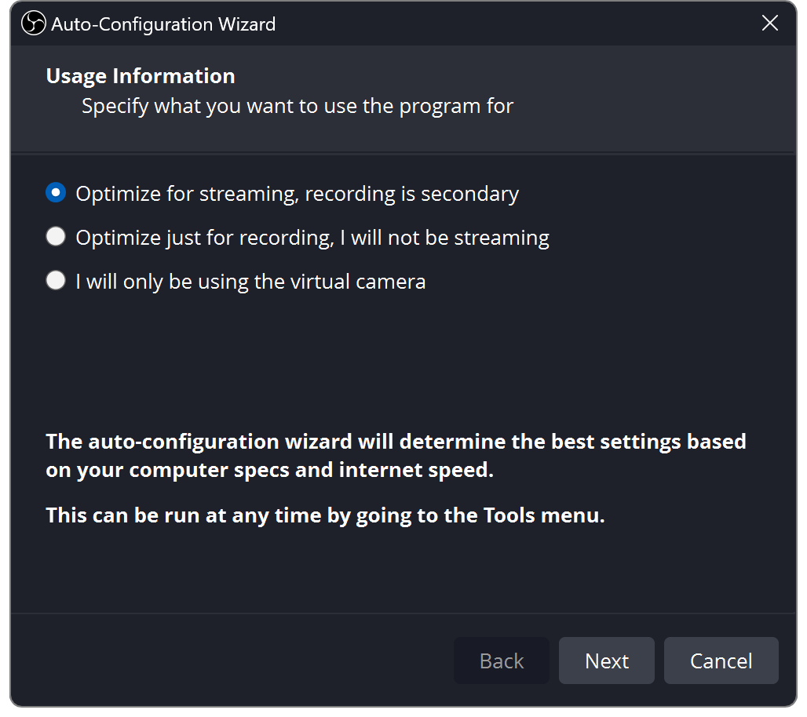
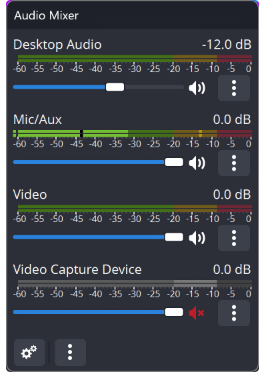
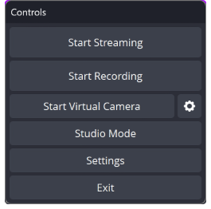

Nechte OBS provést první nastavení
- Nainstalujte OBS Studio a otevřete jej.
- Vyberte Nástroje → Průvodce automatickou konfigurací.
- Vyberte streamování nebo nahrávání, postupujte podle pokynů a použijte nastavení.
Povolte přístup ke kameře, mikrofonu a snímání obrazovky, když vás počítač požádá.
Po výběru se snímky obrazovky otevřou v plné velikosti. Štítky se mohou mírně lišit podle verze OBS.


Vytvořte jednu scénu
Událost scéna je rozložení. A zdroj je něco uvnitř.
Stiskněte + ve Scenes pojmenujte rozvržení a stiskněte + v Zdrojích.
- Fotoaparát / snímací karta
- Zařízení pro záznam videa
- Hra pro Windows
- Zachytávání hry
- Aplikace / celý monitor
- Zachycení okna / displeje
- Chat nebo upozornění
- Prohlížeč
Přetažením rohů změníte velikost. Zdroje nahoře pokrývají ty níže. Použijte oko ke skrytí a zámek k zamezení pohybu.
Přepínání scén a macOS
Na macOS použijte Snímání obrazovky macOS pro okno nebo displej.
Změny scény se normálně projeví přímo na výstupu. Režim Studio vám umožní připravit scénu a poté stisknout Přechod. Sdílený zdroj a změny zvuku mohou stále ovlivnit živý výstup.
Vyberte Přidat existující pro opětovné použití zdroje v jiné scéně.

Vyberte velikost videa
Otevřít Nastavení → Video.
- Plátno
- Velikost vašeho rozvržení
- Výstup
- Video, které odešlete
- 30 snímků za sekundu
- Mluvení / lehčí pracovní zátěž
- 60 snímků za sekundu
- Plynulejší rychlý pohyb
Jednoduchý začátek: Plátno 1920 × 1080, Výstup 1280 × 720, 30 snímků za sekundu.
Pro video na výšku použijte plátno 1080 × 1920 a změňte uspořádání zdrojů tak, aby se vešly.

Dejte svému CPU pauzu
V části Nastavení → Výstup, vyberte hardware H.264 kodér. Vyhrazený hardware zvládá kompresi videa a snižuje spotřebu procesoru.
- NVIDIA
- NVENC H.264
- AMD
- AMD HW H.264 / AVC
- Intel
- QuickSync / QSV H.264
- Apple Silicon
- Hardware Apple VT H264
Žádná hardwarová možnost? Použijte x264 → velmi rychlý a začněte na 720p30.
Chybí kodér nebo přetížený počítač?
Zkontrolujte hardwarovou podporu a aktualizujte grafický ovladač. OBS stále potřebuje kapacitu GPU pro kreslení scén; limit FPS hry nebo nižší výstupní FPS, pokud zaostává.
Pokud hardwarový kodér vašeho Macu nemůže poskytnout CBR, použijte x264. Kompatibilita s kodérem.

Připojte svou platformu
Nastavení → Stream: připojte svůj účet nebo vložte adresu URL serveru a klíč soukromého streamu z jeho řídicího panelu.
Pro ruční nastavení výstupu zvolte Výstup → Upřesnit → Streamování: CBR, 2sekundové klíčové snímky, a Stereo AAC. Níže otevřete svou platformu.
TwitchStandard H.264
| Video | Přenosová rychlost |
|---|---|
| 720p30 | 3,000 |
| 720p60 / 1080p30 | 4,500 |
| 1080p60 | 6,000 |
Zvuk: až 160 kbps. Nastavení Twitch.
Rozšířené vysílání odesílá různé kvality a potřebuje samostatný rozpočet na šířku pásma.
YouTubeH.264 doporučené cíle
| Video | Přenosová rychlost |
|---|---|
| 720p30/60 | 8,000 |
| 1080p30 | 14,000 |
| 1080p60 | 17,000 |
Zvuk: 128 kbps, 44.1 kHz stereo. Toto jsou doporučení, nikoli minima. Nastavení YouTube.
S podporovaným kódováním AV1 / HEVC jsou odpovídající cíle 6 000 / 10 000 / 12 000 kbps.
KickPožadováno H.264 · CBR
| Video | Přenosová rychlost |
|---|---|
| Zkuste 720p30 | 3,000–4,000 |
| Až 1080p60 | Maximálně 8 000 |
Spodní rozsah je doporučený startovací test. Vyzkoušejte zvuk 160 kb/s; použijte stereo na ne více než 48 kHz. Nastavení kopu.
Ponechte prostor pro nahrávání. 6 000 kb/s využívá přibližně 6 Mb/s plus zvuk a režii. Snižte datový tok nebo rozlišení, pokud vaše připojení nestíhá.
Pokyny z října 2026. Postupujte podle aktuálních požadavků vaší platformy. Pro Facebook nebo TikTok nejprve potvrďte, že váš účet nabízí připojení externího kodéru.
Nechte svůj hlas dobře slyšet
- Vyberte si mikrofon Nastavení → Zvuk.
- Mluv normálně. Mířit na vrcholy v okolí −12 až −6 dBFS; vyvarujte se zásahu 0.
- Snižte posuvníky hry, hudby a upozornění, dokud nebude řeč čistá.
Zachyťte každý zvuk jednou. Použijte Desktop Audio pro celé výstupní zařízení, nebo samostatné snímání aplikací. Zachycení obou může zdvojnásobit zvuk.
Zvuk aplikací, macOS a filtry mikrofonu
Windows: použijte Aplikace Audio Capture. Na macOS 13+ použijte OBS Snímání zvuku/obrazovky macOS.
Mikrofon → Filtry: zkuste potlačení lehkého šumu, pak kompresor a omezovač. Přidejte jeden po druhém a poslouchejte.


Vyberte si, co slyšíte
Vyberte sluchátka Nastavení → Zvuk → Upřesnit → Monitorovací zařízení. Poté otevřete mixér Pokročilé vlastnosti zvuku.
Monitor vypnut
Sluchátka Ne
Stream Ano
Obvykle vhodné pro váš mikrofon a hry, které již slyšíte.
Pouze monitorování (ztlumit výstup)
Sluchátka Ano
Stream Ne
Poslouchejte bez odesílání zdroje přímo na výstup.
Monitorovat a odesílat (Monitor and Output)
Sluchátka Ano
Stream Ano
Užitečné pro upozornění nebo TTS, které chcete také slyšet.
Předpokládá, že zdroj není ztlumený a je na vaší výstupní stopě. „Monitor Off“ neztlumí stream.
Vyhněte se echo: nezachycujte znovu své monitorovací zařízení prostřednictvím Desktop Audio. To také může divákům poslat zvuk „Pouze monitor“. Udržujte živý přehrávač platformy ztlumený.
Přidejte překryvný chat nebo upozornění
- Zkopírujte překryvnou adresu URL ze Social Stream Ninja.
- Vyberte Zdroje → + → Prohlížeč a vložte jej. Ponechte si jeho možnosti relace a hesla.
- Nastavte velikost překrytí; použití 1920 × 1080 pro celoobrazovkový překryv na šířku.
- U TTS nebo výstrah povolte Ovládat zvuk přes OBS (Control audio via OBS).
Umístěte jej nad svou hru nebo kameru. Odeslat zkušební zprávu; vyberte jednu v doku SSN, pokud používáte překryvnou vrstvu s doporučenou zprávou.
Prázdné překrytí nebo opakovaný zvuk?
Zkontrolujte, zda relace odpovídá vašemu zdroji chatu. Obnovte zdroj prohlížeče. Ponechte pouze jednu kopii přehrávání TTS.
V případě trvalého chatu ponechte zpočátku automatické vypínání a obnovení aktivace scény vypnuté. Nastavení překrytí SSN · Nastavení TTS.

Nahrajte minutu. Pak jděte žít.
- Vyberte složku pro nahrávání Nastavení → Výstup.
- Stiskněte Spustit nahrávání (Start Recording). Mluvte, přehrávejte zvuk a přepínejte scény.
- Zastavte se a sledujte soubor. Zkontrolujte hlasitost, orámování a synchronizaci rtů.
- Poté nastavte název a viditelnost své platformy Spustit vysílání (Start Streaming). Zkontrolujte jeho náhled a stav streamu; některé platformy také vyžadují Pusťte se do živého vysílání.
Začněte streamovat, abyste mohli veřejně žít. Pokud je to možné, použijte soukromý test. Po dokončení zastavte streamování a potvrďte, že událost platformy skončila.
Formát záznamu a samostatné zvukové stopy
MKV toleruje přerušený záznam. Použijte Soubor → Nahrávky Remux pro MP4 později. Aktuální OBS nabízí také odolné hybridní MP4/MOV.
Pro samostatné úpravy stop ponechte úplný mix na stopě 1, poté přiřaďte mikrofon/hru k dalším stopám v Advanced Audio Properties a povolte je v Recording.


Pokud něco vypadá špatně
Otevřít Zobrazit → Statistiky k identifikaci úzkého místa.
Výpadky sítě
Nižší datový tok; zkuste kabelový Ethernet.
Zpoždění vykreslování
Cap game FPS; zjednodušit scénu.
Zpoždění kódování
Použijte hardwarové kódování nebo nižší výstupní FPS.
Tichý výstup
Zkontrolujte ztlumení, režim sledování a zvukovou stopu.
Nápověda k výkonu OBS · Nápověda k překrytí SSN · Všechny návody